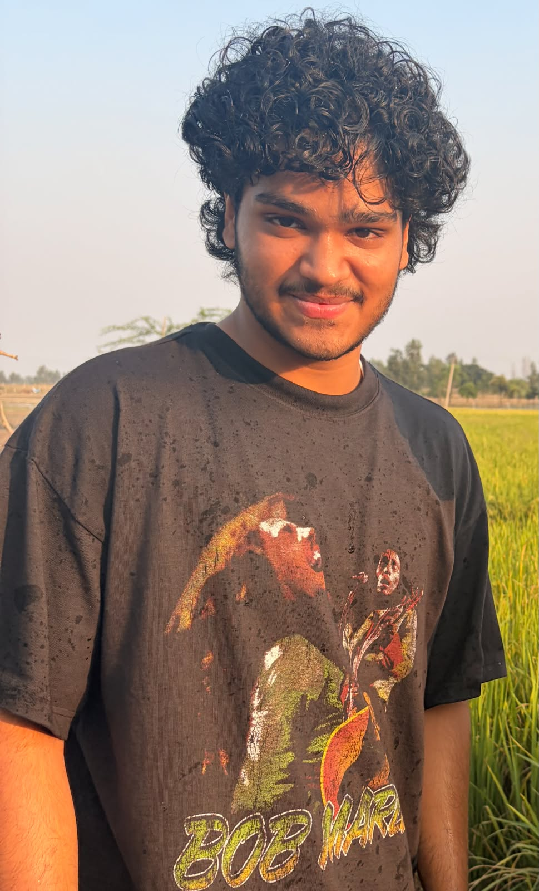

Passionate about strategic marketing, public relations, and driving community impact. Experienced in outbound growth from the Founder's Office at Datic and non-profit administration at college level.

Worked in the Founder's Office at Datic handling outbound marketing, strategic public relations, and client communication.
Currently serving as Vice President and previously Treasurer at Antyodaya Outreach Society, directing youth drives and managing funds.
Strong problem-solving and critical thinking skills with attention to detail in executing projects and community initiatives.
Designed a strategic outreach campaign targeting prospective clients with structured email communication and follow-up schedules.
Organized a college-wide collection drive, coordinating volunteers and transparently managing fund distribution for essential supplies.
Coordinated social media announcements and student communication materials to boost NGO event participation by 40%.
I am open to marketing, sales, and student leadership opportunities. Reach out directly:
Send Email